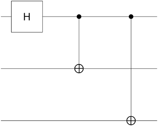
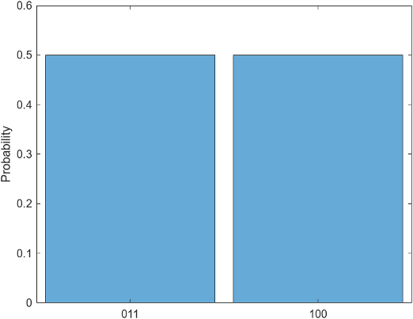

Local Quantum State Simulation
Note
Installation Required: This functionality requires MATLAB Support Package for Quantum Computing.
This topic describes how to simulate a quantum circuit locally and analyze the simulation
results. Building quantum circuits requires iteration on circuit design to refine circuit
gates and confirm behavior. Also, because measurements on quantum hardware are probabilistic,
it is useful to examine the probabilities of final states to determine the most likely outcome
of a measurement. Use the simulate method
of quantumCircuit to
simulate circuits on your local computer. Once you simulate a circuit, use the methods of
quantum.gate.QuantumState to inspect the results.
Create Circuit
Create a quantum circuit with three qubits and three gates. Apply a Hadamard gate to the first qubit, and apply CNOT gates to the second and third qubits, using the first qubit as the control. Plot the circuit to view its qubits and gates.
gates = [hGate(1);
cxGate(1,2);
cxGate(1,3)];
C = quantumCircuit(gates);
plot(C)
Each horizontal line in the plot represents one of the qubits, and the gates are arranged from left to right in the order that they are applied.
Simulate Circuit
Simulate the quantum circuit by using the simulate
method. All qubits start in the state by default, but you can use a second input argument to specify a
different starting state for the qubits. Specify that each qubit has an initial state of .
S = simulate(C,"111")S =
QuantumState with properties:
BasisStates: [8×1 string]
Amplitudes: [8×1 double]
NumQubits: 3Display the basis states and corresponding amplitudes by inspecting the properties of
the resulting quantum.gate.QuantumState object.
S.BasisStates
ans =
8×1 string array
"000"
"001"
"010"
"011"
"100"
"101"
"110"
"111"S.Amplitudes
ans =
0
0
0
0.7071
-0.7071
0
0
0Display State Formula
Display a formula representation of the simulated quantum state by using the formula method.
The formula combines the information in the BasisStates and
Amplitudes properties of S. By default, the
formula uses the Z basis.
f = formula(S)
f =
"0.70711 * |011> +
-0.70711 * |100>"Specify the Basis name-value argument to display the formula using
the X basis. The formula now shows linear combinations of and states.
f2 = formula(S,Basis="X")f2 =
"-0.5 * |++-> +
-0.5 * |+-+> +
0.5 * |-++> +
0.5 * |--->"Plot Possible States
Use histogram to
plot the possible states and their probabilities. The probability of each state is equal to
its amplitude squared. This circuit has only two possible states, and each state has a 50%
chance of being measured.
histogram(S)

Query Possible States
You can query the possible states and their probabilities using the querystates
method. This method returns the same information that the histogram shows, but at the
command line.
[states,P] = querystates(S)
states =
2×1 string array
"011"
"100"
P =
0.5000
0.5000Query Qubit State Probabilities
You can query the probability that specific qubits will be measured in specific states
by using the probability
method. For example, determine the probability that the second qubit will be measured in the state.
p = probability(S,2,"1")p =
0.5000Simulate Quantum State Measurement
Quantum measurements are probabilistic, so the results can differ between trials. The
randsample
method is useful for simulating the aggregated results of many such measurements. You can
specify the number of shots, or trials, and each shot returns a single state.
For example, simulate 50 quantum measurements of the circuit.
M = randsample(S,50)
M =
QuantumMeasurement with properties:
MeasuredStates: [2×1 string]
Counts: [2×1 double]
Probabilities: [2×1 double]
NumQubits: 3Display the counts and estimated probabilities of the measured states.
T = table(M.Counts,M.Probabilities,M.MeasuredStates, ... VariableNames=["Counts","Probabilities","States"])
T =
2×3 table
Counts Probabilities States
______ _____________ ______
21 0.42 "011"
29 0.58 "100" See Also
quantumCircuit | quantum.gate.SimpleGate | quantum.gate.CompositeGate | quantum.gate.QuantumState